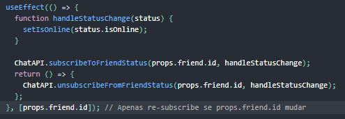

useEffect
O Effect Hook (Hook de Efeito) te permite executar efeitos colaterais em componentes funcionais:

Lembrando que ele não é um life sicronize method....
Esse trecho de código é baseado no exemplo de contador da página anterior, mas nós adicionamos uma nova funcionalidade a ele: nós definimos o título do documento para ser uma mensagem customizada que inclua o número de cliques.
Buscar dados, configurar uma subscription, e mudar o DOM manualmente dentro dos componentes React são exemplos de efeitos colaterais. Esteja você acostumado ou não a chamar essas operações de “efeitos colaterais” (ou somente “efeitos”), você provavelmente já usou eles em seus componentes antes.
Se você está familiarizado com os métodos do ciclo de vida do React, você pode pensar no Hook useEffect como componentDidMount, componentDidUpdate, e componentWillUnmount combinados.
Para mostra na pratica, aqui segui lum exemplo dos componentes de ciclo usando o useEffect:
- componentDidUpdate- execulta toda vez que o componente atualiza.
useEffect(()=>{Toda vez que o componente for execultado ele sera atualizado
console.log('componentDidUpdate');
}); - componentDidMount- execulta uma vez.
useEffect(()=>{Ele necessita de dependencias, essas dependencias pode definir a quantidade de vez q ele sera executado, se estiver vazio será ssomente uma vez
console.log('componentDidMount');
}, []); - componentDidMount- execulta uma vez.
useEffect(()=>{Ele necessita de dependencias, essas dependencias pode definir a quantidade de vez q ele sera executado, se estiver vazio será ssomente uma vez
console.log('componentDidMount');
}, []);
Efeitos Sem Limpeza
De vez em quando, nós queremos executar algum código adicional depois que o React atualizou a DOM. Requisições, mutações manuais do DOM e log são exemplos comuns de efeitos que não precisam de limpeza. Nós dizemos isso porque podemos executa-los e imediatamente esquecer deles. Vamos comparar como classes e Hooks nos permitem expressar tais efeitos colaterais.
Exemplo usando Classes
Em um componente de classe do React, o método render não deve causar efeitos colaterais. Seria muito cedo — nós geralmente queremos executar nossos efeitos depois que o React atualizou a DOM.
Isso é o porque nas classes do React, nós colocamos efeitos dentro de componentDidMount e componentDidUpdate. Voltando ao nosso exemplo, aqui está um componente de classe do React chamado contador que atualiza o título logo após o React faz as mudanças na DOM: Note que nós temos que duplicar o código entre esses dois métodos do ciclo de vida na classe.
Isso acontece porque em muitos casos nós queremos executar o mesmo efeito colateral não importando se o componente
acabou de ser montado ou foi atualizado. Conceitualmente, nós queremos que isso aconteça em cada renderização —
mas componentes de classe do React não tem um método assim. Nós poderíamos extrair um método separado mas ainda
assim teríamos que chamá-lo em dois lugares.
Agora vamos ver como podemos fazer a mesma coisa com o Hook useEffect.
Exemplo usando Hooks
Nós já vimos esse exemplo no topo da página, mas vamos dar uma olhada mais de perto:

O que o useEffect faz? Usando esse Hook, você diz ao React que o componente precisa fazer algo apenas depois da renderização. O React ira se lembrar da função que você passou (nos referiremos a ele como nosso “efeito”), e chamá-la depois que realizar as atualizações do DOM. Nesse efeito, mudamos o título do documento, mas podemos também realizar busca de dados ou chamar alguma API imperativa.
Por que useEffect é chamado dentro de um componente? Colocando useEffect dentro do componente nos permite acessar o state count (ou qualquer outra prop) direto do efeito. Nós não precisamos de uma API especial para lê-los — já está no escopo da função. Hooks adotam as closures do JavaScript e evitam APIs especificas do React onde o JavaScript já provê uma solução.
useEffect executa depois de toda renderização? Sim! Por padrão, ele roda depois da primeira renderização e depois de toda atualização. (Falaremos sobre como customizar isso depois.) Em vez de pensar em termos de “montando” (“mounting”) e “atualizando” (“updating”), você pode achar mais fácil pensar que efeitos acontecem “depois da renderização”. React garante que o DOM foi atualizado na hora de executar os efeitos.
Explicação detalhada
Agora que já sabemos mais sobre os efeitos, essas linhas devem fazer sentido:

Declaramos o state count, e então dizemos ao React que precisamos usar um efeito. Passamos uma função para o Hook useEffect. Essa função que passamos é o nosso efeito. Dentro do nosso efeito, definimos o título do documento usando document.title da API do navegador. Podemos ler o último count dentro do nosso efeito por que ele está dentro do escopo da nossa função. Quando o React renderizar nosso componente, ele ira se lembrar do efeito que usamos, e então executar os nossos efeitos depois de atualizar o DOM. Isso acontece para cada renderização, incluindo a primeira.
Desenvolvedores JavaScript experientes podem perceber que a função passada para o useEffect vai ser diferente a cada renderização. Isso é intencional. Na verdade, isso é o que nos deixa ler o valor de count de dentro do efeito sem nos preocuparmos com ele ficar obsoleto. Toda vez que nós re-renderizarmos, agendamos um efeito diferente, substituindo o antigo. De uma maneira, isso faz os efeitos se comportarem mais como o resultado da renderização — cada efeito “pertence” à sua renderização especifica. Vamos ver mais claramente como isso pode ser útil depois, nessa página.
Ao contrário de componentDidMount ou componentDidUpdate, efeitos agendados com useEffect não bloqueiam o navegador a atualizar a tela. Isso faz seu app parecer mais responsivo. A grande parte dos efeitos não precisam acontecer de forma síncrona. Nos casos incomuns em que eles precisam (como medir o layout), existe um Hook useLayoutEffect separado com uma API idêntica ao useEffect.
Efeitos com limpeza
Anteriormente, nós vimos como expressar efeitos colaterais que não precisam de limpeza. Contudo, alguns efeitos precisam. Por exemplo, nós podemos querer configurar uma subscription para alguma origem de dados externa. Nesse caso, é importante limpar para que não causemos um vazamento de memória! Vamos comparar como faríamos isso com classes e com Hooks.
Exemplos usando classes
Em uma classe React, geralmente você configura uma subscription no componentDidMount, e limpa no componentWillUnmount. Por exemplo, digamos que nós temos um módulo ChatAPI que nos permite fazer um subscribe ao status de online de um amigo. Aqui esta como nós poderíamos fazer o subscribe e mostrar o status usando uma classe: Preste atenção como componentDidMount e componentWillUnmount precisam espelhar um ao outro. Métodos do ciclo de vida nos forçam a dividir essa lógica mesmo quando conceitualmente o código dos dois é relacionado ao mesmo efeito.
Leitores atentos talvez notem que esse exemplo também precisa de um método componentDidUpdate para ficar totalmente correto. Nós ignoraremos isso por enquanto, mas voltaremos nisso em uma sessão mais abaixo nessa página.
Exemplo usadno HOOKS
Vamos ver como poderíamos escrever esse componente usando Hooks. Você pode pensar que precisamos de um efeito separado para executarmos a limpeza. Mas o código para adicionar e remover uma subscription é tão relacionado um com o outro que o useEffect foi desenhado para mantê-los juntos. Se o seu efeito retornar uma função, o React irá executá-la quando for a hora de limpar:
Por que precisamos retornar uma função dos nossos efeitos? Isso é um mecanismo opcional de limpeza para efeitos. Cada efeito pode retornar uma função que irá limpar depois dela. Isso nos permite manter a lógica para adicionar e remover subscriptions perto uma da outra. Elas são parte do mesmo efeito!
Quando exatamente o React limpa um efeito? O React executa a limpeza quando o componente desmonta. Contudo, como aprendemos anteriormente, efeitos rodam em todas as renderizações e não apenas uma vez. É por isso que o React também limpa os efeitos da renderização anterior antes de rodar os efeitos da próxima vez. Nós discutiremos o porquê disso evitar bugs e como podemos desabilitar esse comportamento caso isso cause problemas de performance abaixo.
Pecapitulando
Nós aprendemos que useEffect nos deixa expressar diferentes tipos de efeitos colaterais depois que o componente renderiza. Alguns efeitos podem requerer limpeza, então eles retornam uma função: O Effect Hook unifica ambos casos com uma única API.
Se você acha que tem um bom entendimento de como o Effect Hook funciona, ou se você se sente sobrecarregado, você já pode pular para a próxima página sobre as Regras dos Hooks.
Dicas para usar efeitos
Vamos continuar essa página com um olhar mais aprofundado em alguns aspectos do useEffect sobre os quais alguns usuários mais experientes do React provavelmente ficarão curiosos. Não se sinta obrigado a se aprofundar neles agora. Você sempre pode voltar nessa página para saber mais sobe o Effect Hook.
Dica: use múltiplos efeitos para separar preocupações
Um dos problemas que nós levantamos na Motivação dos Hooks era que os métodos do ciclo de vida das classes muitas vezes continham lógicas não relacionadas, mas as lógicas relacionadas (entre si) estavam separadas em vários métodos. Aqui temos um componente que combina o contador e o indicador de status de amizade dos exemplos anteriores:
Note como a lógica que define document.title esta dividida entre componentDidMount e componentDidUpdate. A lógica do subscription também esta dividida entre componentDidMount e componentWillUnmount. E o componentDidMount contém código das duas tarefas.
Então, como Hook resolvem esse problema? Assim como você pode usar o Hooks State mais de uma vez, você também pode usar vários efeitos. Isso nos permite separar lógicas não relacionadas em diferentes efeitos: Hooks nos permitem dividir o código com base no que ele está fazendo em vez de encaixá-lo em algum nome dos métodos do ciclo de vida. React irá aplicar todos os efeitos usados por um componente, na ordem em que eles foram especificados.
Explicação: Por que efeitos executam em cada atualização
Se você está acostumado com classes, você pode estar se perguntando o porquê da fase de limpeza dos efeitos acontecerem depois de cada re-renderização, e não apenas uma vez durante a desmontagem. Vamos dar uma olhada em um exemplo prático para ver porque esse design nos ajuda a criar componentes com menos bugs.
Anteriormente nessa página, nós introduzimos um componente de exemplo FriendStatus que mostra quando um amigo está online ou não. Nossa classe lê friend.id do this.props, faz subscribe no status do amigo após a montagem do componente e faz unsubscribe durante a desmontagem:
Mas o que acontece se a prop friend mudar enquanto o componente está na tela? Nosso componente deveria continuar exibindo o status de online de um amigo diferente. Isso é um bug. Nós também causaríamos um memory leak ou um crash durante o desmonte, já que a chamada do unsubscribe estaria usando o id do amigo errado.
Em componentes de classe, nós precisariamos adicionar componentDidUpdate para cuidar desse caso: Esquecer de cuidar do componentDidUpdate devidamente é uma fonte comum de bugs em aplicações React.
Agora considere a versão desse componente que usa Hooks: Ele não sofre desse bug. (Mas nós também não fizemos nenhuma mudança nele.)
Não existe nenhum código especial para cuidar das atualizações porque useEffect cuida delas por padrão. Ele limpa os efeitos anteriores antes de aplicar os próximos efeitos. Para ilustrar isso, aqui está a sequência de chamadas ao subscribe e unsubscribe que o componente fez ao longo do tempo: Este comportamento garante a consistência por padrão e previne bugs que são comuns aos componente de classe devido à falta da lógica de atualização.
Dica: Otimizando a performace ao pular efeitos
Em alguns casos, limpar ou aplicar o efeito em cada renderização pode criar um problema de performance. Em componentes de classes, nós resolvemos isso escrevendo uma comparação extra com prevProps ou prevState dentro do componentDidUpdate:
Esse requerimento é comum o bastante para estar embutido na API do Hook useEffect. Você pode dizer ao React para pular a aplicação de um efeito se certos valores não tiverem mudado entre as renderizações. Para fazer isso, passe uma array como um segundo argumento opcional ao useEffect:
No exemplo acima, nós passamos o [count] como segundo argumento. O que isso quer dizer? Se count é 5, e o nosso componente re-renderiza com count ainda sendo 5, o React irá comparar [5] da renderização passada e [5] da próxima renderização. Por todos os itens na array serem o mesmo (5 === 5), o React ira pular o efeito. Essa é a nossa otimização.
Quando nós renderizamos com count atualizado para 6, o React irá comparar os itens no array [5] da renderização passada com os items no array [6] da próxima renderização. Desta vez, o React irá re-aplicar o efeito porque 5 !== 6. Se houver múltiplos itens no array, o React irá re-executar o efeitos mesmo se apenas um deles for diferente.
Isso também funciona para efeitos que tenham uma fase de limpeza:  No futuro, talvez o segundo argumento seja adicionado automaticamente por uma transformação em tempo de build.
Se você usar essa otimização, tenha certeza de que a array inclua qualquer valor do escopo acima (como props e state) que mude com o tempo e que ele seja usado pelo efeito. Caso contrário, seu código fará referência a valores obsoletos de renderizações anteriores. Saiba mais sobre como lidar com funções e o que fazer quando a matriz muda com muita frequência.
Se você quer executar um efeito e limpá-lo apenas uma vez (na montagem e desmontagem), você pode passar um array vazio ([]) como segundo argumento. Isso conta ao React que o seu efeito não depende de nenhum valor das props ou state, então ele nunca precisa re-executar. Isso não é tratado como um caso especial — segue diretamente de como o array de dependências sempre funciona.
Se você passar um array vazio ([]), a props e o state passados dentro do efeito sempre terão seus valores iniciais. Enquanto passando [] como segundo parâmetro aproxima-se do modelo mental familiar de componentDidMount e componentWillUnmount, geralmente há melhores soluções para evitar efeitos repetidos com muita frequência. Além disso, não esqueça de que o React adia a execução do useEffect até o navegador ser pintado, então fazer trabalho extra é menos problemático.
Recomendamos usar as regras do exhaustive-deps como parte do nosso pacote eslint-plugin-react-hooks. Ele avisa quando as dependências são especificadas incorretamente e sugere uma correção.
Próximos passos
Parabéns! Essa foi uma página longa, mas com sorte ao fim a maioria das suas perguntas sobre efeitos foram respondidas. Você aprendeu sobre o Hook State e o Hook Effect, e há muito o que você pode fazer com os dois combinados. Eles cobrem a maioria dos casos de uso para classes — e para os que eles não cobrirem, talvez você encontre alguns Hooks adicionais úteis.
Nós também estamos começando a ver como Hooks resolvem problemas levantados na Motivação. Nós vimos como a limpeza dos efeitos evitam duplicação de código no componentDidUpdate e componentWillUnmount, mantém códigos relacionados juntos, e ajuda a evitar bugs. Nós também vimos como separar efeitos pelo seu propósito, que é uma coisa que não conseguíamos fazer com classes.
Nesse ponto você pode estar se perguntando como Hooks funcionam. Como o React sabe qual chamada do useState corresponde a qual variável de state entre as re-renderizações? Como o React “compara” os efeitos anteriores e os próximos toda atualização? Na próxima página nos iremos aprender sobre as Regras dos Hooks — elas são essenciais para fazer os Hooks funcionarem.
useEffect PARTE 2
O useEffect é um Hook que serve para lidar com os efeitos. Podemos usá-los como os lifeCycles componentDidMount,
componentDidUpdate e componentWillUnmount.
Imagine que a gente tenha uma API que nos retorna uma lista de produtos baseado no nome que passarmos.

O useEffect() recebe como primeiro parâmetro uma função que será executada assim que o componente renderizar.
Então é um ótimo lugar para fazer requisições.
Dessa maneira como escrevemos, a função passada ao useEffect() será executada sempre que o componente for
atualizado.
 E se quisermos que a função seja executada apenas uma vez, que é quando o componente é inserido na tela, basta
passar um Array vazio.
E se quisermos que a função seja executada apenas uma vez, que é quando o componente é inserido na tela, basta
passar um Array vazio.
 Você pode executar quantos useEffects() quiser, o que nos dá mais controle sobre o que e quando algo deve ser
executado.
Você pode executar quantos useEffects() quiser, o que nos dá mais controle sobre o que e quando algo deve ser
executado.